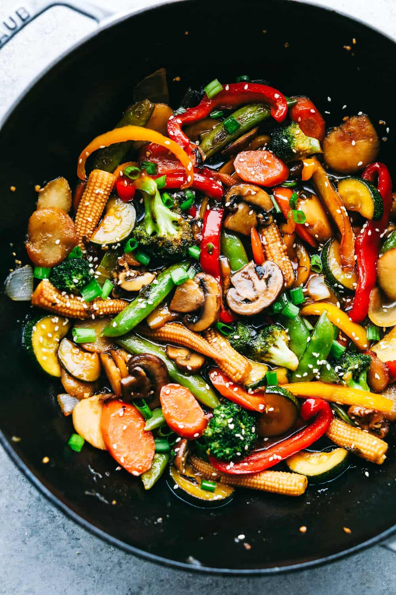

Stirfry

Description
Stir frying is a Chinese cooking technique in which ingredients are fried in a small amount of very hot oil while being stirred in a wok.
The technique originated in China and in recent centuries has spread into other parts of Asia and the West.
Ingredients
- Olive Oil
- Vegetables: red bell pepper, yellow bell peppers, sugar snap peas, carrots, mushrooms, broccoli, baby corn, water chestnuts.
- Sauce: soy sauce, garlic cloves (minced), brown sugar, sesame oil, chicken broth, cornstarch
- Garnish: green onions and sesame seeds
Steps
The first step is to cook up your veggies. I used a combination of red and yellow peppers, snow peas, broccoli, carrots, and mushrooms. I also added some baby corn and water chestnuts into the mix for variety. While the veggies are cooking, I make a simple garlic sauce. The sauce gets poured over the veggies then is simmered until thickened. You can enjoy your veggie stir fry as-is, or over rice.
- Sauté: In a wok or large skillet add 1 Tablespoon olive oil over medium high heat. Add bell pepper, peas,
carrots, mushrooms, broccoli, baby corn, and water chestnuts. Sauté 2-3 minutes until veggies are almost tender.
- Whisk: In a small bowl, whisk together soy sauce, garlic, brown sugar, sesame oil, chicken broth, and
cornstarch.
- Mix: Pour over veggies and cook until the sauce has thickened.
- Garnish: add chopped green onions and sesame seeds if desired.